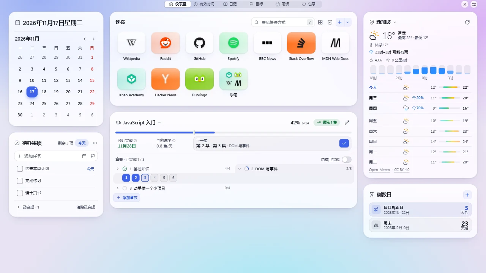
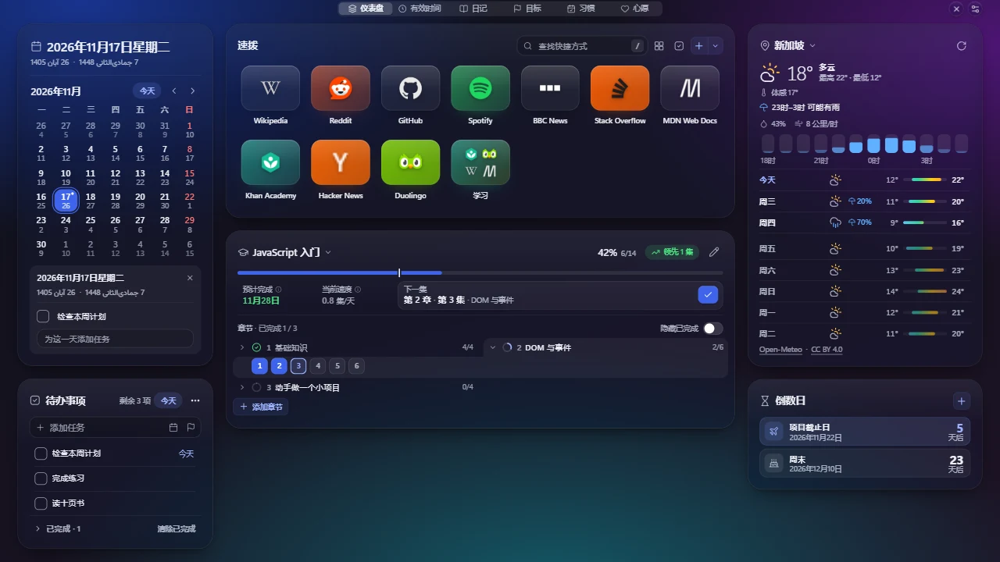

用 Chrome 新标签页安排待办事项和日程
打开一个新标签页，就能访问常用网站、查看今天到期的任务，还能开始一段专注时间。复习或赶项目时，用文件夹整理相关网址，再从日历选一天安排任务。
适用于电脑版 Chrome 的免费扩展程序。Tivona 会替换新标签页，无需注册账号。

整理常用网站，做好每天的计划
网址快捷方式和书签文件夹
把学习和工作常用的网址分组，用键盘搜索快捷方式。也可以从 Chrome 书签导入你选中的文件夹。
带截止日期的待办清单
为任务设置截止日期和优先级，补充备注及操作步骤。查看今日到期和已经逾期的任务，或选择月历上的一天查看当天的任务。
公历、波斯历和伊斯兰历
在月历中切换公历、波斯太阳历（贾拉利历）和伊斯兰历（回历），也可以同时显示多种历法的日期。波斯历视图会标记伊朗的节假日。
番茄钟与专注时间记录
自定义专注和休息时长，或单独使用秒表。从任务详情启动计时，并把实际用时记在这项任务下。

在设置中选择要显示的组件。你可以查看天气、设置倒计时、跟踪习惯、目标和课程进度，也可以写日记。
设置你的第一个新标签页
- 从 Chrome 应用商店安装 Tivona，然后打开一个新标签页。
- 添加一个常用网站，或为一项任务设置截止日期。
- 在设置中选择显示语言、历法和需要的组件。
常见问题
可以导入 Chrome 书签吗？
在快捷访问区域选择从 Chrome 书签导入。Tivona 会请求访问权限，并复制你选中的文件夹。
如果已经装了另一个新标签页扩展怎么办？
Chrome 同一时间只允许一个扩展控制新标签页。你可以在 Chrome 的扩展程序管理页面选择要启用的扩展。
怎么把任务迁移到另一台电脑？
在「设置 → 数据」中导出备份，然后在另一台电脑的 Tivona 中恢复该文件。备份包含你的待办清单。
离线使用与隐私
日历、待办事项、日记和计时器可离线使用。访问网站、获取天气预报或在线图标需要联网。
任务、日记和专注记录保存在当前设备。启用 Chrome 同步后，部分设置和快捷方式可以同步。在已配置 PostHog 的版本中，分享使用情况是可选的，初始状态为关闭。 隐私政策（英文）
帮助与反馈
更新后如需恢复数据，请打开「设置 → 数据 → 自动备份」。需要帮助时，可以写邮件联系 Tivona 支持团队，或在 Chrome 应用商店的扩展页面查看支持信息。